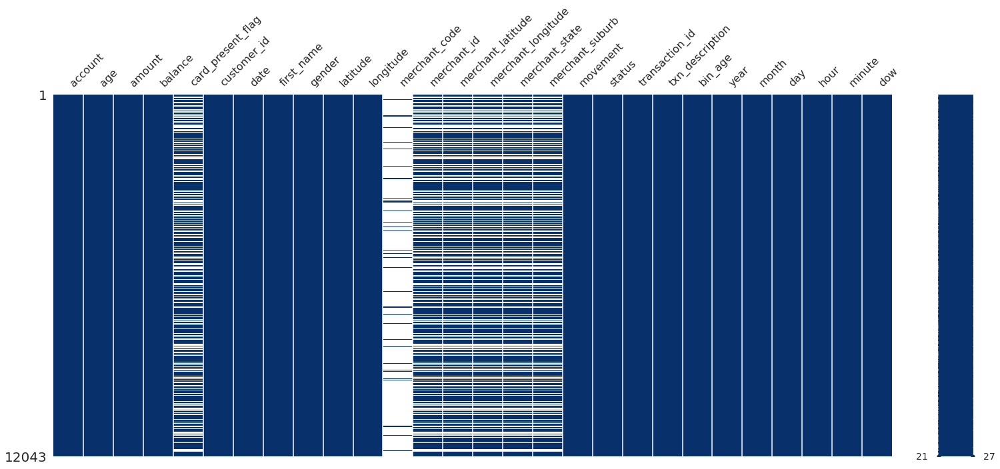

1 | Introduction
1.1 | Customer Financial Transactions
- This task is based on synthesised trasaction dataset, containing 3 months worth of transactions for 100 hypothetical customers
- It contains purchases , recurring transactions & salary transactions
- The dataset is designed to simulate realistic transaction bahaviours that are observed in ANZ's read transaction data
- So many of the insights you gather from the task below will be a genuine reflection of a realistic dataset
1.2 | Data@ANZ Tasks
- Segment the dataset and draw unique insights, including visualisation of the transaction volume and assessing the effect of any outliers
- The dataset is by no means complete, however it gives us enough information to provide some kind of recommendation for various groups of customers
- An interesting articals outlines the possible reasons we may be interested in analysing client transaction data
Let us prepare the notebook.
import pandas as pd
import numpy as np
import plotly
import missingno as msno
import seaborn as sns
import matplotlib.pyplot as plt
import plotly.express as px
import plotly.graph_objects as go
import plotly.figure_factory as ff
from plotly.subplots import make_subplots
import warnings
warnings.filterwarnings('ignore')
# Create Linear Model
from sklearn.linear_model import LinearRegression
from sklearn.model_selection import train_test_split as tts
from sklearn.metrics import mean_squared_error as MSE
from sklearn.tree import DecisionTreeRegressor as DTR
sns.set(style='whitegrid')
plotly.offline.init_notebook_mode(connected=True)
# Reading dataset
df = pd.read_csv("./data/anz.csv")
df.head(5)
| Let's see the first five data from our dataset.
status
card_present_flag
bpay_biller_code
account currency
long_lat txn_description
merchant_id
merchant_code
first_name balance date gender age merchant_suburb
merchant_state extraction amount transaction_id country
customer_id merchant_long_lat movement
0 authorized
1.0 NaN ACC-1598451071 AUD 153.41 -27.95
POS 81c48296-73be-44a7-befa-d053f48ce7cd NaN Diana 35.39 8/1/2018
F 26 Ashmore QLD 2018-08-01T01:01:15.000+0000 16.25
a623070bfead4541a6b0fff8a09e706c Australia CUS-2487424745 153.38 -27.99
debit 1 authorized 0.0 NaN ACC-1598451071 AUD 153.41 -27.95
SALES-POS 830a451c-316e-4a6a-bf25-e37caedca49e NaN Diana 21.20 8/1/2018 F
26 Sydney NSW 2018-08-01T01:13:45.000+0000 14.19 13270a2a902145da9db4c951e04b51b9
Australia CUS-2487424745 151.21 -33.87 debit 2 authorized 1.0
NaN ACC-1222300524 AUD 151.23 -33.94 POS 835c231d-8cdf-4e96-859d-e9d571760cf0
NaN Michael 5.71 8/1/2018 M 38 Sydney NSW
2018-08-01T01:26:15.000+0000 6.42 feb79e7ecd7048a5a36ec889d1a94270 Australia CUS-2142601169
151.21 -33.87 debit 3 authorized 1.0 NaN
ACC-1037050564 AUD 153.10 -27.66 SALES-POS
48514682-c78a-4a88-b0da-2d6302e64673 NaN Rhonda 2117.22
8/1/2018 F 40 Buderim QLD
2018-08-01T01:38:45.000+0000 40.90 2698170da3704fd981b15e64a006079e
Australia CUS-1614226872 153.05 -26.68 debit
4 authorized 1.0 NaN ACC-1598451071 AUD
153.41 -27.95 SALES-POS b4e02c10-0852-4273-b8fd-7b3395e32eb0 NaN
Diana 17.95 8/1/2018 F 26 Mermaid Beach QLD
2018-08-01T01:51:15.000+0000 3.25 329adf79878c4cf0aeb4188b4691c266
Australia CUS-2487424745 153.44 -28.06 debit
df.T.sort_index().T.columns
Index(['account', 'age', 'amount', 'balance', 'bpay_biller_code', 'card_present_flag', 'country', 'currency', 'customer_id', 'date', 'extraction', 'first_name', 'gender', 'long_lat', 'merchant_code', 'merchant_id', 'merchant_long_lat', 'merchant_state', 'merchant_suburb', 'movement', 'status', 'transaction_id', 'txn_description'], dtype='object')
Column Data Type (dtype)
We can change some of the data types, eg. date & extraction to datetime so we can extract some data from this feature
df.info()
RangeIndex: 12043 entries, 0 to 12042 Data columns (total 23 columns): # Column Non-Null Count Dtype --- ------ -------------- ----- 0 status 12043 non-null object 1 card_present_flag 7717 non-null float64 2 bpay_biller_code 885 non-null object 3 account 12043 non-null object 4 currency 12043 non-null object 5 long_lat 12043 non-null object 6 txn_description 12043 non-null object 7 merchant_id 7717 non-null object 8 merchant_code 883 non-null float64 9 first_name 12043 non-null object 10 balance 12043 non-null float64 11 date 12043 non-null object 12 gender 12043 non-null object 13 age 12043 non-null int64 14 merchant_suburb 7717 non-null object 15 merchant_state 7717 non-null object 16 extraction 12043 non-null object 17 amount 12043 non-null float64 18 transaction_id 12043 non-null object 19 country 12043 non-null object 20 customer_id 12043 non-null object 21 merchant_long_lat 7717 non-null object 22 movement 12043 non-null object dtypes: float64(4), int64(1), object(18) memory usage: 2.1+ MB
| Numerical Feature Statistics
The dataset containsbalance, age & amount features, which correspond to the account balance , age and payment ammount(all transactions made)
df.describe().T
| count | mean | std | min | 25% | 50% | 75% | max | |
|---|---|---|---|---|---|---|---|---|
| card_present_flag | 7717.0 | 0.802644 | 0.398029 | 0.00 | 1.000 | 1.00 | 1.000 | 1.00 |
| merchant_code | 883.0 | 0.000000 | 0.000000 | 0.00 | 0.000 | 0.00 | 0.000 | 0.00 |
| balance | 12043.0 | 14704.195553 | 31503.722652 | 0.24 | 3158.585 | 6432.01 | 12465.945 | 267128.52 |
| age | 12043.0 | 30.582330 | 10.046343 | 18.00 | 22.000 | 28.00 | 38.000 | 78.00 |
| amount | 12043.0 | 187.933588 | 592.599934 | 0.10 | 16.000 | 29.00 | 53.655 | 8835.98 |
- Mean age of transaction customers is 30.58 years old, the oldest is 78 and youngest is 18 years old
- Mean transaction amount is 187 AUD, lowest 10 cents & highest 8,835 AUD
- mean balance of customers is 14,704 AUD, lowest is 24 cents & highest 267,128 AUD
2.2 | DataFrame Adjustments
- Split
merchant_long_latinto two columns, this will allow us to visualise the data, same goes forlong_lat - Convert columns that contain time data from
objecttype todatetime64; extracting more data from this feature - Create an
age groupfeature,bin_age, which could have some relevance for both tasks
# Merchant location
ldf = df['merchant_long_lat'].str.split(' ',expand=True)
ldf.columns = ['merchant_longitude','merchant_latitude']
df = df.drop('merchant_long_lat',axis=1)
# Some coordinates
ldf_gps = df['long_lat'].str.split(' ',expand=True)
ldf_gps.columns = ['longitude','latitude']
df = df.drop('long_lat',axis=1)
df = pd.concat([df,ldf,ldf_gps],axis=1)
df.sort_index(axis=1, inplace=True)
# Convert dtype to datetime64
# extraction time is always after data
df['extraction'] = df['extraction'].astype('datetime64[ns]')
df['date'] = df['date'].astype('datetime64[ns]')
# Add simple age category feature
df['bin_age']=pd.cut(df.age,[0,20,30,40,50,60,70,200],
labels=['<20','20-30','30-40','40-50','50-60','60-70','70>'])
Extracting Time Data
We will be utilising the extraction time for generating time features:- Two features, extraction & date are time based features; can extract some useful features from them (eg. day of the week)
- We can notice that extraction time occurs after date, there shouldn't be a big difference between the two wh
# Extract time based data
year = df.extraction.dt.year # year
month = df.extraction.dt.month # month
day = df.extraction.dt.day # day of the month
dow = df.extraction.dt.dayofweek # day of the week
hour = df.extraction.dt.hour # hour
minute = df.extraction.dt.minute # minute
# Store time features in df_time
df_time = pd.concat([year,month,day,hour,minute,dow],axis=1)
df_time.columns = ['year','month','day','hour','minute','dow']
df = pd.concat([df,df_time],axis=1)
# Dictionary used to map numeric to categorical
dict_map = {0:'Monday', 1:'Tuesday', 2:'Wednesday',
3:'Thursday', 4:'Friday', 5:'Saturday',
6:'Sunday'}
# Covert numbers to string representations for better interpretability
df['dow'] = df['extraction'].dt.dayofweek.map(dict_map)
df = df.drop(['extraction'],axis=1)
